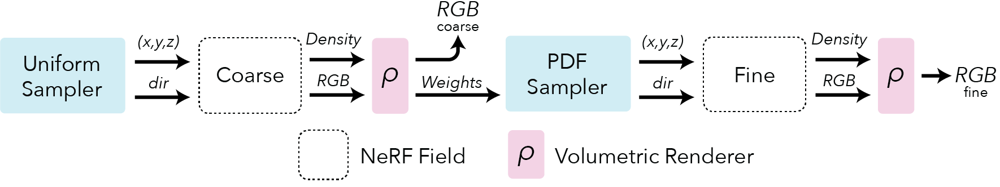
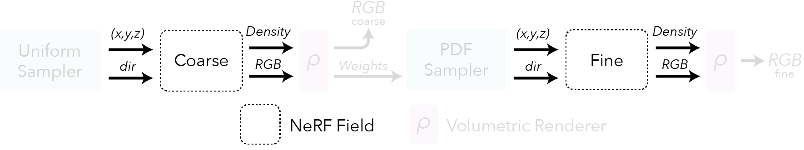
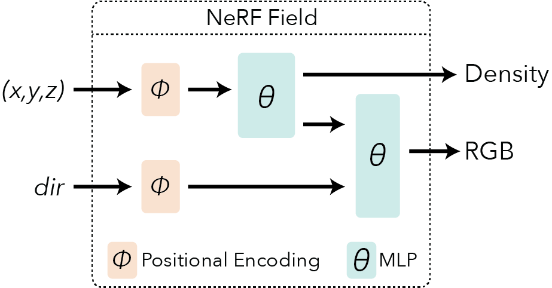
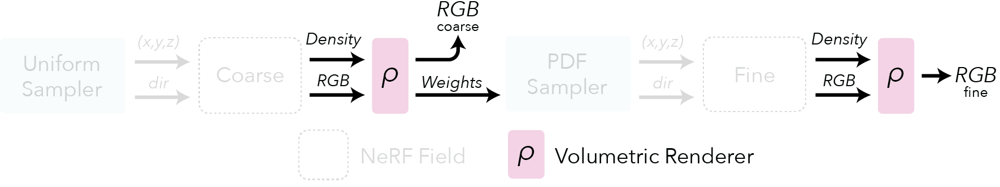
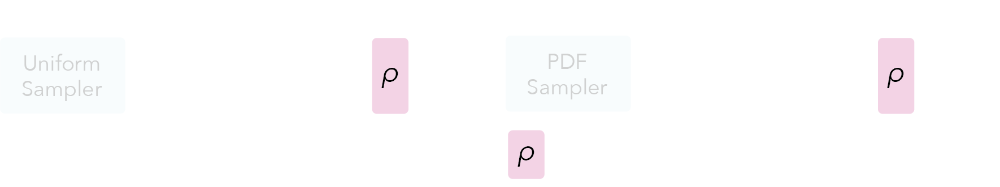
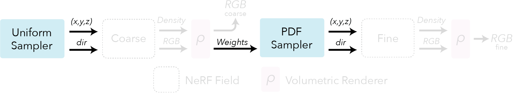

NeRF#
Neural Radiance Fields
Running the model#
ns-train vanilla-nerf
Method overview#
If you have arrived to this site, it is likely that you have at least heard of NeRFs. This page will discuss the original NeRF paper, “NeRF: Representing Scenes as Neural Radiance Fields for View Synthesis” by Mildenhall, Srinivasan, Tancik et al. (2020).
For most tasks, using the original NeRF model is likely not a good choice and hence we provide implementations of various other NeRF related models. It is however useful to understand how NeRF’s work as most follow ups follow a similar structure and it doesn’t require CUDA to execute (useful for stepping through the code with a debugger if you don’t have a GPU at hand).
The goal is to optimize a volumetric representation of a scene that can be rendered from novel viewpoints. This representation is optimized from a set of images and associated camera poses.
Assumptions
If any of the following assumptions are broken, the reconstructions may fail completely or contain artifacts such as excess geometry.
Camera poses are known
Scene is static, objects do not move
The scene appearance is constant (ie. exposure doesn’t change)
Dense input capture (Each point in the scene should be visible in multiple images)
Pipeline#
 Here is an overview pipeline for NeRF, we will walk through each component in this guide.
Field representation#
NeRFs are a volumetric representation encoded into a neural network. They are not 3D meshes and they are not voxels. For each point in space the NeRF represents a view dependent radiance. More concretely each point has a density which describes how transparent or opaque a point in space is. They also have a view dependent color that changes depending on the angle the point is viewed.
 {kind=link}
{kind=link}
The associated NeRF fields can be instantiated with the following nerfstudio code (encoding described in next section):
from nerfstudio.fields.vanilla_nerf_field import NeRFField
field_coarse = NeRFField(position_encoding=pos_enc, direction_encoding=dir_enc)
field_fine = NeRFField(position_encoding=pos_enc, direction_encoding=dir_enc)
Positional encoding#
An extra trick is necessary to make the neural network expressive enough to represent fine details in the scene. The input coordinates \((x,y,z,\theta,\phi)\) need to be encoded to a higher dimensional space prior to being input into the network. You can learn more about encodings here.
from nerfstudio.field_components.encodings import NeRFEncoding
pos_enc = NeRFEncoding(
in_dim=3, num_frequencies=10, min_freq_exp=0.0, max_freq_exp=8.0, include_input=True
)
dir_enc = NeRFEncoding(
in_dim=3, num_frequencies=4, min_freq_exp=0.0, max_freq_exp=4.0, include_input=True
)
Rendering#
 Now that we have a representation of space, we need some way to render new images of it. To accomplish this, we are going to project a ray from the target pixel and evaluate points along that ray. We then rely on classic volumetric rendering techniques [Kajiya, 1984] to composite the points into a predicted color.
This compositing is similar to what happens in tools like Photoshop when you layer multiple objects of varying opacity on top of each other. The only difference is that NeRF takes into account the differences in spacing between points.
Rending RGB images is not the only type of output render supported. It is possible to render other output types such as depth and semantics. Additional renderers can be found Here.
Associated nerfstudio code:
from nerfstudio.model_components.renderers import RGBRenderer
renderer_rgb = RGBRenderer(background_color=colors.WHITE)
# Ray samples discussed in the next section
field_outputs = field_coarse.forward(ray_samples)
weights = ray_samples.get_weights(field_outputs[FieldHeadNames.DENSITY])
rgb = renderer_rgb(
rgb=field_outputs[FieldHeadNames.RGB],
weights=weights,
)
Sampling#
How we sample points along rays in space is an important design decision. Various sampling strategies can be used which are discussed in detail in the Ray Samplers guide. In NeRF we take advantage of a hierarchical sampling scheme that first uses a uniform sampler and is followed by a PDF sampler.
The uniform sampler distributes samples evenly between a predefined distance range from the camera. These are then used to compute an initial render of the scene. The renderer optionally produces weights for each sample that correlate with how important each sample was to the final renderer.
The PDF sampler uses these weights to generate a new set of samples that are biased to regions of higher weight. In practice, these regions are near the surface of the object.
Associated code:
from nerfstudio.model_components.ray_samplers import PDFSampler, UniformSampler
sampler_uniform = UniformSampler(num_samples=num_coarse_samples)
ray_samples_uniform = sampler_uniform(ray_bundle)
sampler_pdf = PDFSampler(num_samples=num_importance_samples)
field_outputs_coarse = field_coarse.forward(ray_samples_uniform)
weights_coarse = ray_samples_uniform.get_weights(field_outputs_coarse[FieldHeadNames.DENSITY])
ray_samples_pdf = sampler_pdf(ray_bundle, ray_samples_uniform, weights_coarse)
Warning
Described above is specific to scenes that have known bounds (ie. the Blender Synthetic dataset). For unbounded scenes, the original NeRF paper uses Normalized Device Coordinates (NDC) to warp space, along with a linear in disparity sampler. We do not support NDC, for unbounded scenes consider using Spatial Distortions.
Tip
For all sampling, we use Stratified samples during optimization and unmodified samples during inference. Further details can be found in the Ray Samplers guide.